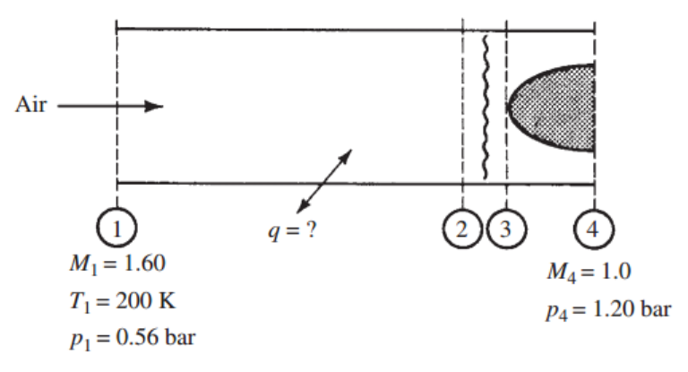
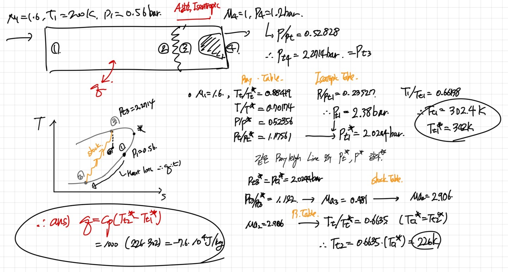
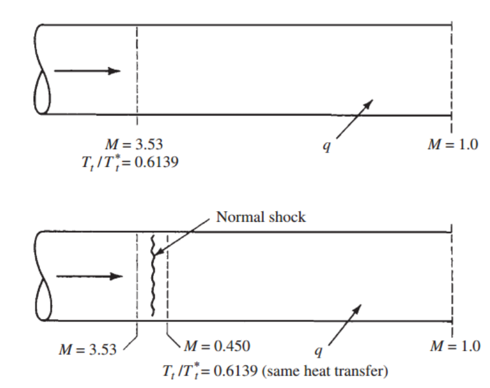

Finally,
Gas dynamics 마지막 포스터 입니다..
진짜 길고 길었던 Gas dynamics
어렵지만 그래도 마지막까지 가봅시다
지난시간
Heat transfer 존재할때
Rayleigh flow에 대해서 알아보았습니다.
1. Rayleigh flow + shock
2. Chocking in Rayleigh flow
이 두가지만 살펴보고 마무리하겠습니다.
먼저 Normal shock의 특징 다시한번 remind
1. Supersonic -> Subsonic
2. Mass flow rate 일정
3. Linear Momentum 일정
4. Stagnation Enthalpy 일정
Fanno flow 경우 4 가지 조건 모두 만족하는
서로 같은 모멘텀이지만, 다른 Ma에서
Normal shock이 발생하여
Ma >1 에서 Ma <1 로 jump 했던게
기억 나실 겁니다.
하지만 Rayleigh flow는
한가지 조건
이 만족이 안됩니다.
바로
Stagnation Enthalpy가 선을 따라서 계속해서 증가한다는것.
하지만, 그럼에도 조건을 다 만족시키면서
점프 하는 경우의 수가 있습니다.
[State2 Supersonic 에서 시작해 바로 State 3 으로 jump case]
![[Gas Dynamics] Ch 10 Rayleigh Flow - part 2 - shock and Heat chocking](./images/img-001.png)
Stagnaiton enthalpy 일정을
Normal shock 에서만
맞춰주기 위해서
2->2t=3t->3 으로
즉 Supersonic -> subsonic 으로 점프 하는 것이죠.
따라서 점2->3과정 외에는 Rayleigh line 에서
Stagnation Enthalpy가 계속해서 변합니다.
why? dht = dq 였기 때문에.
그렇다면 오직 점2,3에서만
위 4가지 조건
1. Supersonic -> Subsonic
2. Mass flow rate 일정
3. Linear Momentum 일정
4. Stagnation Enthalpy 일정
을 만족하네요??
이 조건은 normal shock 의 조건이었고
Normal shock이 일어나는 Fanno flow의 조건이기도 했습니다.
따라서 따라서
Fanno line 과 Rayliegh line을 동시에 그리면 중첩되는 점은
2,3 두 곳 밖에 없다는 것입니다.
[밑사진에서는 1->2과정]
![[Gas Dynamics] Ch 10 Rayleigh Flow - part 2 - shock and Heat chocking](./images/img-002.png)
예제를 풀어보면 이해가 더 잘되겠죠??
![[Gas Dynamics] Ch 10 Rayleigh Flow - part 2 - shock and Heat chocking](./images/img-003.png)


진짜 최종 마지막으로 Chocking으로
Gas dynamics 시마이
해봅시다
이번에도 Fanno flow처럼
Subsonic, Supersonic 으로 나누어서 생각해보자.
[Subsonic case]
그림과 같은 Heat을 받는 Converging only nozzle을 생각해보자.
똑같이 Prec을 점점 줄이면서 nozzle 유동을 조절한다.
![[Gas Dynamics] Ch 10 Rayleigh Flow - part 2 - shock and Heat chocking](./images/img-006.png)
P rec 을 줄이다 보면
Mass flow rate는 계속해서 증가한다.
그러다가 M3 = 1인 그 순간
Mass flow rate가 최대인 순간이다.
그 이후 Prec을 아무리 줄여도
Mass flow rate는 이전과 동일하다.
많이 들어봤죠?
Area chocking, friction choking과
정확히 동일하다는 것을 감 잡았을 것이다.
따라서, 우리는 이 현상을
Thermal Chocking이라고 부른다.
하지만, however, but,
느낌 오시나요??
압력을 아무리 줄여도
바뀌지 않던 mass flow rate가
변하는 경우가 존재한다.
바로
Heat Transfer
이 늘어난 경우이다.
Ch3에서도 Ch9에서도 계속 말했다 싶이,
총 엔트로피 변화량은
Reversible 한 dse, Irreversible 한 dsi로 나뉜다.
![[Gas Dynamics] Ch 10 Rayleigh Flow - part 2 - shock and Heat chocking](./images/img-007.png)
여기서 우리는 no friction이라고 했으니
dsi = 0 임을 알 수 있다.
결국 dse term 만 남게 된다.
Ch2에서 설명했듯이
dse 는 Heat transfer term이다.
따라서,
Heat transfer 증가 -> 총 엔트로피 증가
결국 Rayleigh flow의 엔트로피는 증가해야만 한다.
이를 만족 시켜주기 위해서는 밑 그래프에 보이듯이
Mass flow rate 가 감소해야만 한다.
즉, 새로운 Rayleigh line으로 이동 함을 알 수 있다.
![[Gas Dynamics] Ch 10 Rayleigh Flow - part 2 - shock and Heat chocking](./images/img-008.png)
[Supersonic case]
그렇다면 supersonic의 경우는??
Fanno flow에서는 어땠었는지 기억을 회상해보자.
열이 추가로 들어왔을때, Mass flow rate를 감소시키지 않고
길이를 더 늘려 Friction 증가할 경우,
normal shock 이용해서
Boundary condition을 맞춰주었다.
하지만,
Rayleigh flow에서
normal Shock의 효과에 대해서
알아보자.

위 파이프의 경우 shock이 없는 경우이다.
그때 Tt / Tt는 Normal shock이 있는 경우와 동일하다.
그 이유는 아래 그래프를 보면, 같은 Rayleigh line이므로,
T2t = T3t
뿐만아니라 Normal shock을 지나도 Stagnation Enthalpy는 동일하다.
따라서 T2t = T3t.
여기서 중요한 것은 Heat transfer 양은 Tt/Tt양과 비례하다는 것이다.
따라서, 'Normal shock이 있던 없던 둘의 Heat transfer양은 동일하다'
결국 우리에게 주어진 문제,
Supersonic에서 Heat transfer양이 늘어난 경우,
Normal shock은 has nothing to do with them.
이라는 말이다.
교재에서는,
The location preceding the Rayleigh flow에서
Shock이 일어나야 한다 라고 언급하며,
Converging-Diverging nozzle에서
Diverging구간에서 Normal shock
or Detached shock in front of the Exit
이 해결책이라고 언급하였다.
이렇게 Rayleigh Flow를 마지막으로
Gas Dynamics Review를 마무리 하겠습니다.
많이 부족기때문에 혹시 틀린 내용있다면
댓글 부탁드립니다~